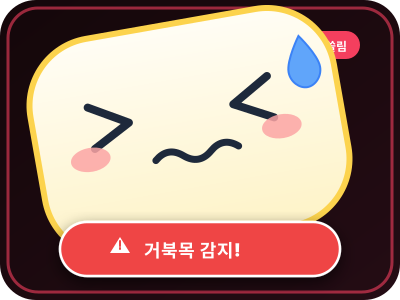
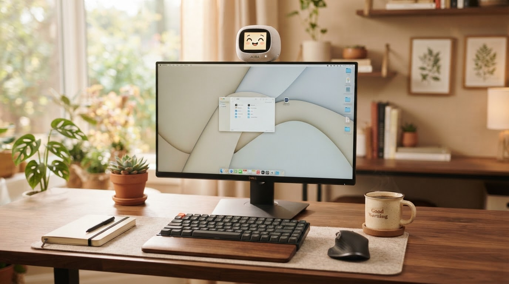
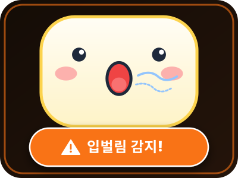

거북목
고개가 앞으로 쏠린 상태가 오래 이어지면 경추와 어깨에 부담이 쌓입니다. 정면 영상의 얼굴·상체 영역과 얼굴 랜드마크로 내 바른 자세 대비 변화를 추적합니다. 절대 경추 각도는 재지 않습니다.
- 개인 기준 대비 편차
- 30초 지속 시 알림 (시작값)

컴퓨터에 몰입하는 순간 무의식적으로 발생하는 거북목(Forward Head Posture)과 구강 호흡(Mouth Breathing) 습관. 몸에 아무것도 걸치지 않는 독립 Vision NPU가 실시간 감지하여, 귀여운 디스플레이 캐릭터 표정으로 다정하게 바른 자세와 코호흡을 이끌어줍니다.

타이머 앱은 실제 자세와 상관없이 울리고, 착용형 센서는 불편하고, PC 웹캠 소프트웨어는 PC 자원과 영상 노출이 부담입니다.
| 비교 항목 | 고정 타이머 앱 | 착용형 센서 | PC 웹캠 소프트웨어 | 이 제품 |
|---|---|---|---|---|
| 나쁜 자세가 생긴 순간 알림 | close정해진 주기로만 작동 | check | check | check기준 시간 이상 지속 시 |
| 몸에 아무것도 붙이지 않음 | check | close이물감·착용 피로 | check | check모니터 위에 거치 |
| 입벌림 감지 | close | close감지할 수 없음 | remove제품마다 다름 | check입술 랜드마크 |
| PC 자원 부담 없음 | check | check | closeCPU/GPU를 크게 점유 | check기기 내부 NPU |
| 영상이 밖으로 나가지 않음 | check영상 없음 | check영상 없음 | close영상이 PC 소프트웨어를 거침 | check클라우드 전송·영상 저장 없음 |
제품마다 다름 · 비교는 PRD 1.2의 기존 방식 한계를 기준으로 했습니다.
장시간 화면을 볼 때 무의식적으로 나타나는 거북목과 입벌림을 감지해, 모니터 위 2.0인치 LCD 캐릭터로 알려줍니다.
고개가 앞으로 쏠린 상태가 오래 이어지면 경추와 어깨에 부담이 쌓입니다. 정면 영상의 얼굴·상체 영역과 얼굴 랜드마크로 내 바른 자세 대비 변화를 추적합니다. 절대 경추 각도는 재지 않습니다.

몰입할 때 턱 근육이 풀리며 생기는 입벌림은 구강 건조와 턱관절 부담으로 이어질 수 있습니다. 입술 내측 점의 입 벌림 비율(MAR)로 감지하고, 말하기처럼 짧은 개폐는 제외합니다.

센서 착용 없이 약 10초 캘리브레이션만 마치면 코칭이 시작됩니다. 기준 시간과 임계값은 시작값이며 PoC와 사용자 테스트로 확정합니다.
모니터 상단 중앙에 두고 USB를 연결합니다. 설치 가이드가 얼굴 위치·정면 정도·어깨 가시성을 확인하고, 범위를 벗어나면 재조정을 안내합니다.
바른 자세와 입 다문 상태를 약 10초 유지하면 개인 기준값을 저장합니다. 움직임이 크면 재촬영을 요청하고, 기준은 사용 중 자동으로 바꾸지 않습니다.
기기 내부 NPU가 얼굴·상체 영역(YOLO-seg, 3~5fps)과 얼굴 랜드마크(MediaPipe, 10~15fps)를 추론합니다. 가림·화질 불량 구간은 판정을 보류합니다.
나쁜 상태가 기준 시간 이상 이어질 때만 LCD에 경고 캐릭터를 띄웁니다. 말하기·하품처럼 짧은 동작은 제외합니다.
사용자가 턱을 당기거나 입을 다물면 화면이 바로 응원 캐릭터로 돌아옵니다.
불량 유지 시간과 교정 횟수를 로컬 DB에만 기록합니다(시제품: 보드, 제품: PC 앱 SQLite). PC 앱에서 일·주·월 추이를 봅니다.
사용하면서 맞춰집니다. 모델을 다시 학습하지 않고 입 다문 상태의 MAR 분포와 발화 패턴 통계만 갱신하고, 피드백에 따라 민감도를 허용 범위 안에서 조정합니다. 쿨다운·스누즈·일일 상한으로 알림 피로를 막고, 기준 자세는 자동으로 바꾸지 않습니다.
시제품은 통계 갱신만, 피드백 조정은 PC 앱 단계영상은 기기 안에서만 처리하고, PC로는 통계만 보냅니다. 시제품은 개발 보드로 검증하고 양산 SoC는 PoC 결과로 정합니다.
제품(양산) 목표 수치이며 실측 결과가 아닙니다. 시제품의 1차 목표는 수치 달성이 아니라 지표를 측정할 수 있는 평가 체계를 갖추는 것입니다.
이벤트 단위(알림 1회 = 1건), 정면 설치(허용 설치 범위 내) 기준입니다. 정답은 측면 보조 카메라로 측정한 CVA 기반입니다.
이벤트 단위, 정답은 입술 내측 간격 라벨 기준입니다. 발화·하품·식사의 처리 규칙을 사전에 정의합니다.
판정 조건이 확정된 시점부터 LCD 화면 전환까지 100ms 이내입니다 (판정 지속 시간과 별개).
알림 중 오알림 비율입니다. 음료 섭취, 대화, 손 가림 등 정상 행동 구간을 포함해 평가합니다.
캐릭터 알림 발생 후 5초 이내에 사용자가 바른 자세로 복귀하는 비율의 목표입니다.
8시간 연속 가동 기준 프레임 드랍률 1% 이하를 목표로 합니다.
※ 평가 데이터는 습관이 있는 사용자를 포함하고 조명 조건을 다양하게 구성하며, 이벤트 약 300건 이상을 목표로 합니다(추정치, 평가 설계 시 재계산). 정확도 지표는 정답 데이터(측면 카메라 CVA, 입술 간격 라벨) 수집 방법을 PoC에서 함께 정합니다.
범위를 좁혀 정확도와 안정성에 집중합니다. PRD v1.2.3의 개발 범위·제외 범위와 시제품 범위입니다.
임직원 100인 사무 조직이 단말기 100대를 도입하는 가상 시나리오입니다. 불량 자세로 인한 불편과 집중력 저하를 줄여 생산성에 기여하는 것을 목표로 합니다.
모든 금액은 PRD의 가정값이며 실제 효과를 보장하지 않습니다. 오픈소스 모델 라이선스 비용은 아직 반영하지 않았습니다(PRD 7장 미결).